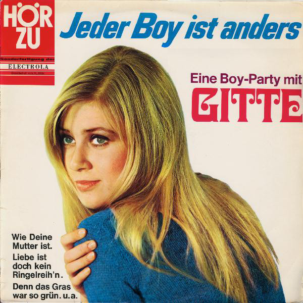
Jeder Boy ist anders
Label: HÖR ZU – SHZE 213
Format: Vinyl, LP
Land: Germany
Veröffentlicht: 1967
Trackliste
Jeder Boy Ist Anders
2:18
Wie Deine Mutter Ist
3:14
Jede Hat Einmal Im Leben Einen Jonny
2:17
Und Ich Wollte Nicht
2:43
Ich Bin Leider Soviel Jünger
2:40
Liebe Ist Doch Kein Ringelreih'n
2:37
Die Welt, Die Liegt Vor Mir
2:07
Später, Peter, Wird Alles Anders
2:29
Du Hast Mir Alles Mit Musik Gesagt
2:26
Denn Das Gras War So Grün
2:21
1967 // Gitte Jeder boy ist anders
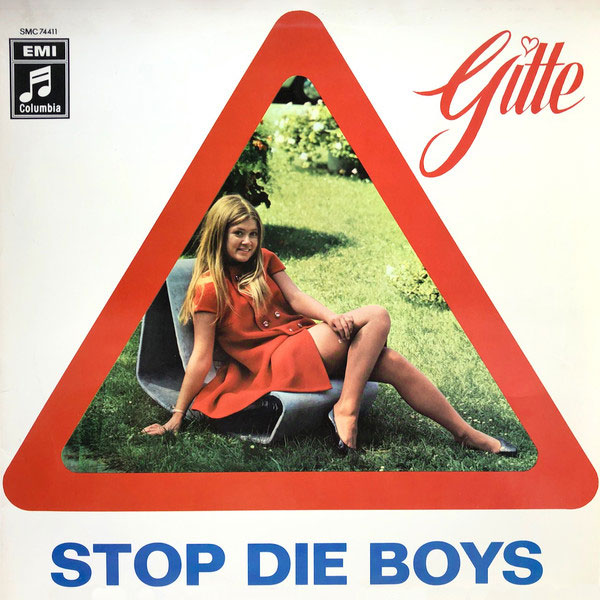
Stop Die Boys // Gitte Sagt Es Mit Musik
Format: Vinyl, LP
Jahr: 1968
Trackliste
Und Nun Muß Er Zu Den Soldaten
3:46
Meine Uhr Bleibt Nicht Steh'n
3:51
1968 // Gitte Stop Die Boys - Gitte Sagt Es Mit Musik
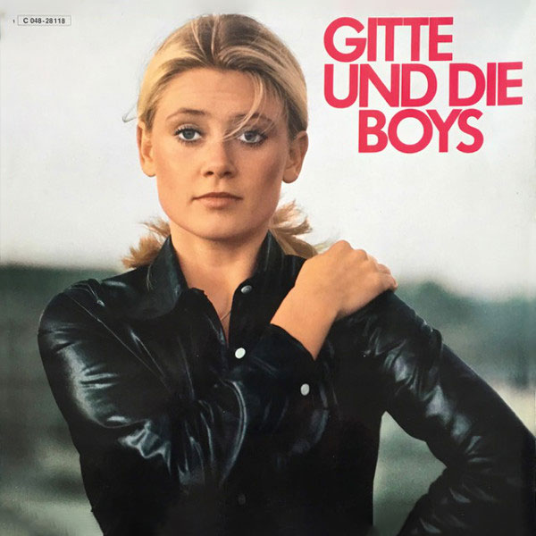
Gitte und die Boys
Format: Vinyl, LP
Jahr: 1969
Trackliste
Jede Hat Einmal Im Leben Einen Jonny
2:19
Ich Bin Leider Soviel Jünger
2:44
Liebe Ist Doch Kein Ringelreih'n
2:40
Die Welt, Die Liegt Vor Mir
2:10
Später, Peter, Wird Alles Anders
2:31
Du Hast Mir Alles Mit Musik Gesagt
2:29
Denn Das Gras War So Grün
2:21
1969 // Gitte und die Boys
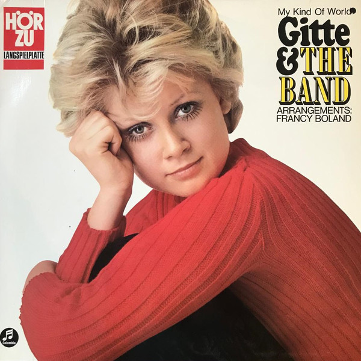
Gitte & The Band // My Kind Of World
Format: Vinyl, LP
Genre: Jazz, Blues
Jahr: 1969
Trackliste
Und Nun Muß Er Zu Den Soldaten
3:46
Meine Uhr Bleibt Nicht Steh'n
3:51
1968 // Gitte Stop Die Boys - Gitte Sagt Es Mit Musik
1973 // Gitte Hænning Unge dag
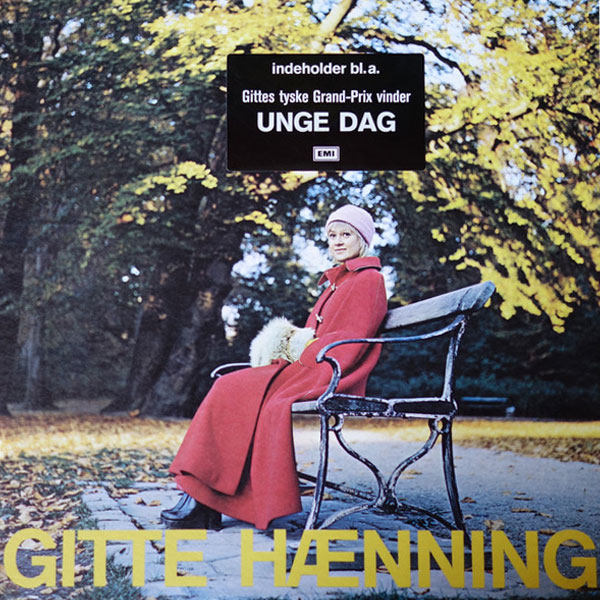
GitteHænning Unge dag
Format: Vinyl, LP
Jahr: 1973
Trackliste
Læg Din Hånd I En Hånd
3:01
Don Juan Fra Sacramento
2:48
Hvad Var Jeg Vel Uden Dig
3:03
Alle Vil De Jo Det Samme
2:38
Jeg Er Den Lyk'ligste Pige Der Har Levet På Jorden
3:24
Gøgler Husker Du Den Forårsdag
3:53
Dette Øjeblik Med Dig
2:53
Jeg Vil Så Gerne Nå Ham
3:54
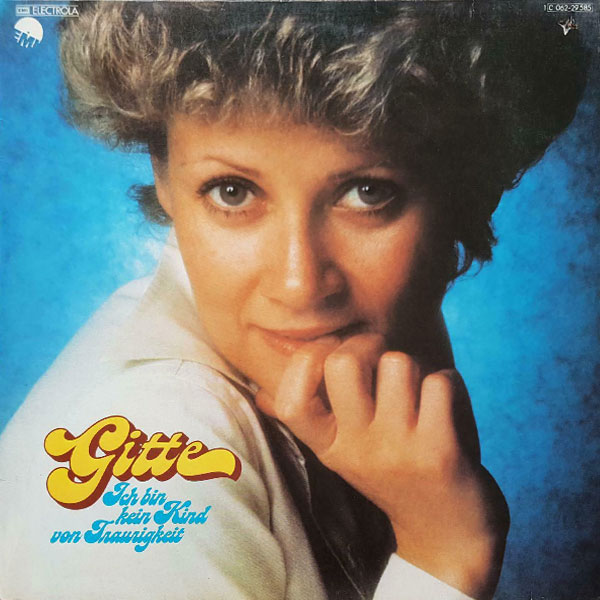
Gitte – Ich Bin Kein Kind Von Traurigkeit
Label: EMI – 1C 062-29585
Format: Vinyl, LP, Compilation
Jahr: 1975
Trackliste
Ich Bin Kein Kind Von Traurigkeit
Ich Hab Die Liebe Verspielt In Monte Carlo
Hallo, Wie Geht Es Robert?
Einerseits Und And'rerseits
So Schön Kann Doch Kein Mann Sein
Das Schwarze Licht Der Einsamkeit
1975 // Gitte Ich Bin Kein Kind Von Traurigkeit
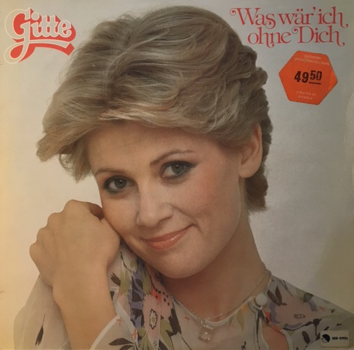
Gitte – Was wär ich ohne dich
Label: EMI – 1C 062-29585
Format: Vinyl, LP, Compilation
Jahr: 1976
Trackliste
Was Wär' Ich Ohne Dich (Emotion/Amoureuse)
4:15
Der Lauf Der Welt (Circle Never Ends)
2:49
So Muß Ein Mann Sein (Man What A Man)
2:42
Da War Nie Ein Mann Wie Du (I Only Have Eyes For You)
3:30
Einmal Paris - Zweimal Zurück (Emmène-Moi)
2:44
Tut Mir Leid Mein Schatz
3:00
Du Bist Genau Wie Der April
3:00
Ich Bin Das Kind Nummer Zehn (Second Hand Rose)
3:04
Laß Mich Heute Nicht Allein
3:10
1976 // Gitte Was wär ich ohne dich
1977 // Gitte Regenbogen
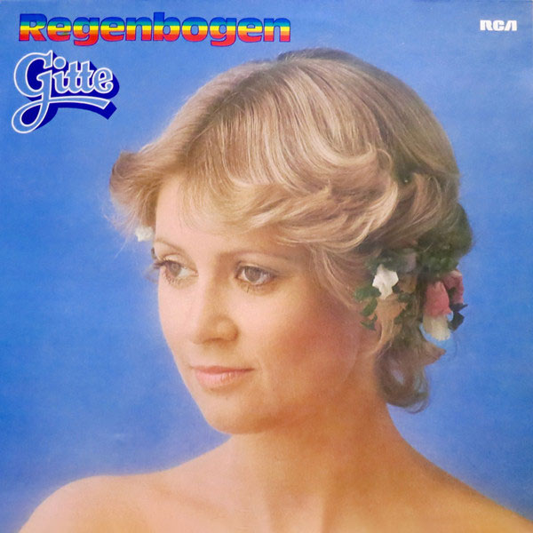
Gitte – Regenbogen
Label: RCA Victor – PL-28307
Format: Vinyl, LP, Compilation
Jahr: 1977
Trackliste
Dein Name Steht In Meinem Herzen
Glück Ist Nicht Nur Ein Wort
Bis Ich Auf Eignen Beinen Steh
Diesen Schuh Zieh Ich Nicht An
Reise Durch Das Land Der Träume
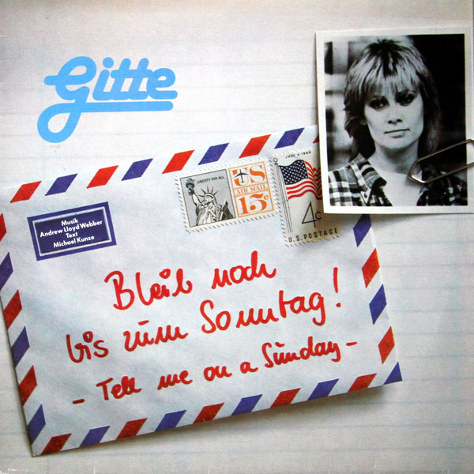
Gitte – Bleib' noch bis zum Sonntag
Label:Global Records
Format: Vinyl, LP
Jahr: 1980
Trackliste
Freu Dich Bloß Nicht Zu Früh
3:31
Würdest Du Mich Mal Ausreden Lassen
2:15
Ich Sterb Nicht Dran (I)
1:41
Ich Hab Geglaubt, Du Bist Verliebt
2:30
Ich Sterb Nicht Dran (II)
2:18
Ein Zweiter Brief Nach Hause
1:18
Komm Bald Mit Demselben Blick Zurück
3:16
Freu Dich Bloß Nicht Zu Früh (Reprise)
0:57
Bleib Noch Bis Zum Sonntag
3:36
Ich Sterb Nicht Dran (III)
2:17
Ich Bin Wie Du, Du Bist Wie Ich
2:44
Was Dir Niemand Vorher Gab
3:14
Würdest Du Mich Bitte Ausreden Lassen
2:46
1980 // Gitte Bleib' noch bis zum Sonntag
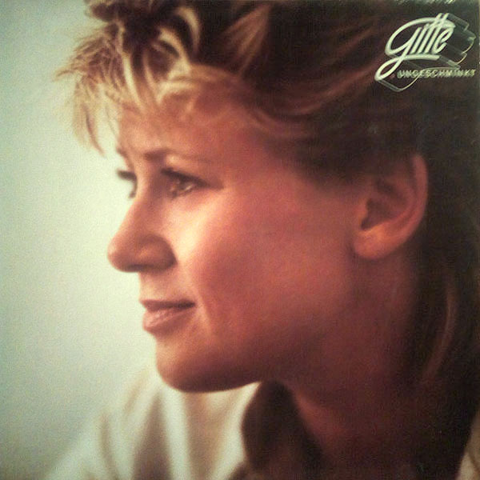
Gitte – Ungeschminkt
Label: Global Records
Format: Vinyl, LP
Jahr: 1982
Trackliste
Wie Himbeeren Auf Eis
4:27
Der Anruf (Er Rief An)
4:38
Ein Engel, Der Über Leichen Geht
4:04
Und Wenn Ich Dich Liebe
4:18
1982 // Gitte Ungeschminkt
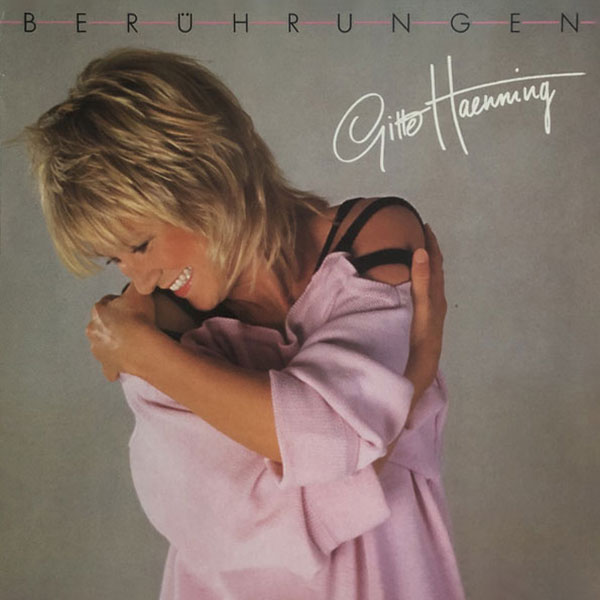
Gitte Haenning – Berührungen
Label: Global Records
Format: Vinyl, LP
Jahr: 1983
Trackliste
Ein Morgen In Deinem Pyjama
Gestern, Heute Und Morgen
1983 // Gitte Haenning Berührungen
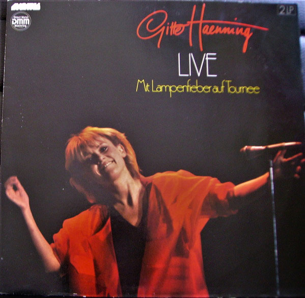
Gitte Haenning // Live (Mit Lampenfieber auf Tournee)
Label: Global Records
Format: Vinyl, LP
Jahr: 1984
Trackliste
Freu Dich Bloß Nicht Zu Früh
0:40
Würdest Du Mich Mal Ausreden Lassen
2:11
Bleib Noch Bis Zum Sonntag
3:57
Freu Dich Bloß Nicht Zu Früh (Reprise)
1:07
Farben Meiner Träume
2:58
Ein Morgen In Deinem Pyjama
3:22
Die Dunkelheit Der Nacht
3:16
Wie Himbeeren Auf Eis
3:56
Und Wenn Ich Dich Liebe
4:27
Freu Dich Bloß Nicht Zu Früh
3:14
Die Frau, Die Dich Liebt
3:39
1983 // Gitte HaenningLive (Mit Lampenfieber auf Tournee)
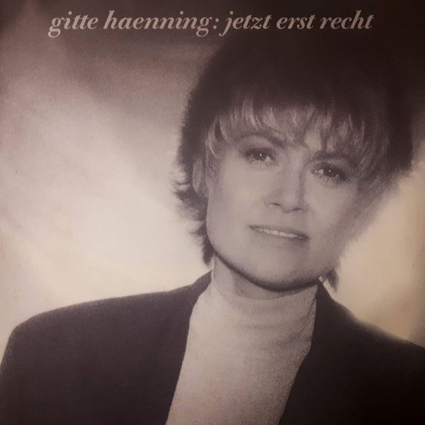
Gitte Haenning – Jetzt Erst Recht
Label: Global Records
Format: Vinyl, LP
Jahr: 1987
Trackliste
Du Warst Anders Als Die Andern
2:52
Ich Werde Nie Mehr Tanzen (Shoo-Shoo)
3:31
Eines Morgens, Eines Tages
3:56
1987 // Gitte Haenning Jetzt erst recht